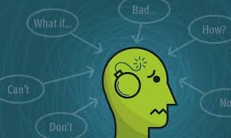
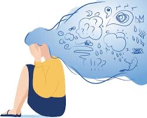

Being someone with firsthand experience, it is safe
to say that my day to day life has been controlled by
ongoing anxiety, which became most severe during my
time at college. It is important to manage time and
stick to deadlines, but it is just as important to practice
self care religously. Not a lot of people take mental health
as seriously as they should, causing them to spiral into
a toxic environment that can be harmful to themselves and others.
Not only that, but coming to college puts a lot
of social stress on students who find trouble fitting
in or feeling apart of a defined social group. Please make
a concious effort to include anyone and everyone who is having
a tough time adjusting to college life. It is so easy to make new
contacts on campus, as long as everyone puts the effort in,
especially during this rough time of being socially distant.

According to the anxiety & depression association of America,
the most important component of battling anxiety is educating
yourself and becoming self-aware of the problem. College campuses have
many different resources that you can utiluze in order to treat
mental health concerns. Your tuition isn't just going towards your
credited classes, but also, the infinite amount of resources that
are available to you. USE THEM!
